Structure and Interpretation of Computer Programs (SICP)
Publisher: MIT Press
Download: PDF EPUB Texinfo
|
Structure and Interpretation of Computer Programs (SICP) Publisher: MIT Press Download: PDF EPUB Texinfo |
| 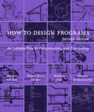 |
How to Design Programs (HTDP) Matthias Felleisen, Robert Bruce Findler, Matthew Flatt and Shriram Krishnamurthi Read on the web | First edition | 2nd edition Publisher: MIT Press |
| 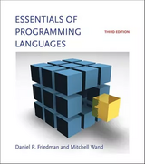 |
Essentials of Programming Languages (EOPL) Daniel P. Friedman, Mitchell Wand, Christopher T. Haynes Authors' website: 3rd edition Source code: 3rd edition Download: PDF |
| 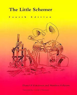 |
The Little Schemer Author page including sample chapter, errata, etc. Publisher: MIT Press |
|
The Seasoned Schemer Author page including sample chapter, errata, etc. Publisher: MIT Press |
| 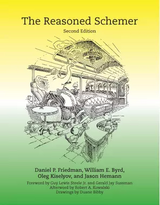 |
The Reasoned Schemer Publisher: MIT Press |
| 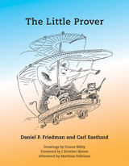 |
The Little Prover Daniel P. Friedman and Carl Eastlund Publisher: MIT Press |
| 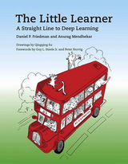 |
The Little Learner A Straight Line to Deep Learning Daniel P. Friedman and Anurag Mendhekar Publisher: MIT Press |
| 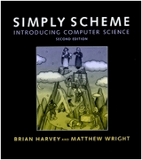 |
Simply Scheme Introducing Computer Science Brian Harvey, Matthew Wright |
| 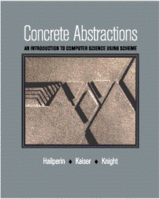 |
Concrete Abstractions An Introduction to Computer Science Using Scheme Max Hailperin, Barbara Kaiser, Karl Knight |
| 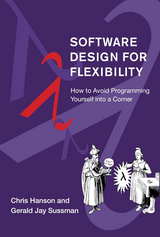 |
Software Design for Flexibility How to Avoid Programming Yourself into a Corner Chris Hanson, Gerald Jay Sussman Publisher: MIT Press |
| 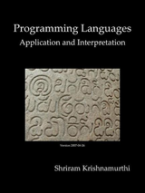 |
Programming Languages: Application and Interpretation (PLAI) Shriram Krishnamurthi Primarily using Plait, a Scheme variant on the Racket platform with a type system close to that of ML. |
| 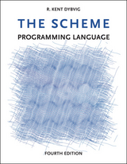 |
The Scheme Programming Language (TSPL) R. Kent Dybvig Illustrations by Jean-Pierre Hébert Read on the web: 2nd edition | 3rd edition | 4th edition Errata: 3rd edition | 4th edition |
|
Realm of Racket Learn to Program, One Game at a Time! Publisher: No Starch Press |
Teach Yourself Scheme in Fixnum Days
Dorai Sitaram
Read on the web: 2nd edition | 3rd edition | 4th edition
How to Use Scheme The Book
Matthias Felleisen, Robert Bruce Findler, Matthew Flatt, Shriram Krishnamurthi, Paul Steckler
Programming in Scheme Learn Scheme Through Artificial Intelligence Programs
| 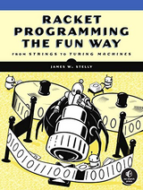 |
Racket Programming the Fun Way From Strings to Turing Machines James W. Stelly Publisher: No Starch Press |
| 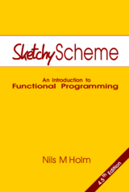 |
Sketchy Scheme An Introduction to Functional Programming Nils M Holm Publisher: Lulu Press Read on the web: 3rd edition |
| 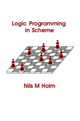 |
Logic Programming in Scheme Nils M Holm Publisher: Lulu Press |
| 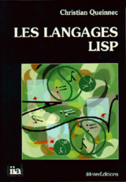 |
Les langages Lisp (fr) Christian Queinnec (Ecole Polytechnique, Paris) Translated to English by Kathleen Callaway Publisher: Cambridge University Press |
| 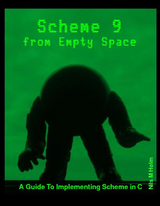 |
Scheme 9 from Empty Space Nils M Holm Publisher: Lulu Press |
| 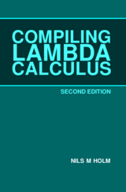 |
Compiling Lambda Calculus Nils M Holm Publisher: Lulu Press |
An Introduction to Scheme and its Implementation
Paul Wilson (University of Texas at Austin)
The T Programming Language A Dialect of Lisp
PC Scheme User's Guide and Language Reference Manual
TI Scheme Language Reference Manual
Programming in MacScheme
MacScheme Manual and Software
Visual Lisp A Guide to Artful Programming
Paradigms of Artificial Intelligence Programming (PAIP) by Peter Norvig has a chapter on Scheme.
Lisp System Implementation by Nils M Holm is complementary to Compiling Lambda Calculus by the same author. The ideas developed in CLC are more throughly and practically implemented in LSI. The book is of interest to Scheme implementers and includes material on lexical and dynamic binding, tail call elimination, garbage collection, and non-local exits.
Lisp from Nothing by
Nils M Holm describes a compiler called LISCMP. The
bootstrap compiler is written in Scheme and is listed in the
appendix.